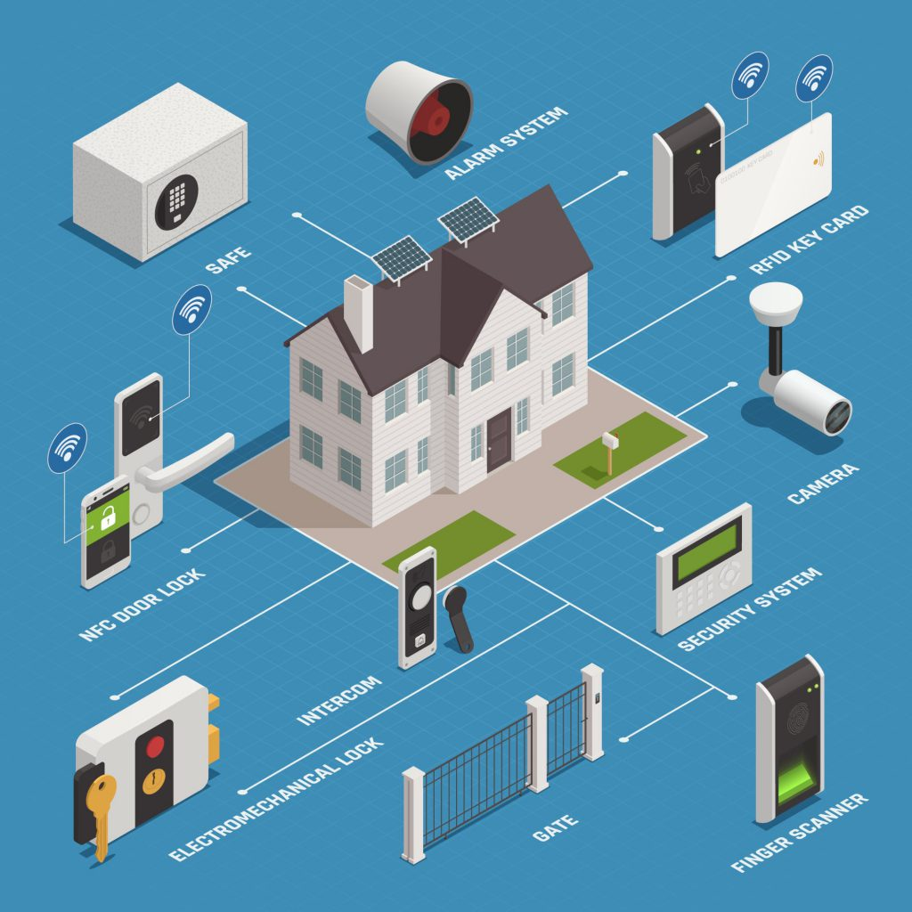
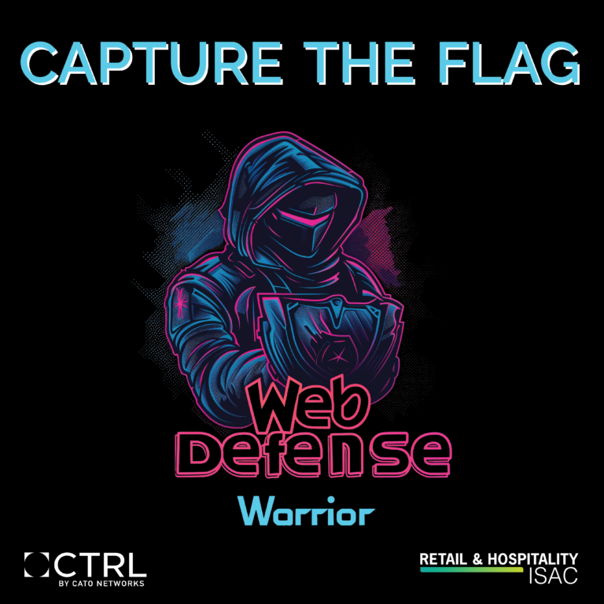
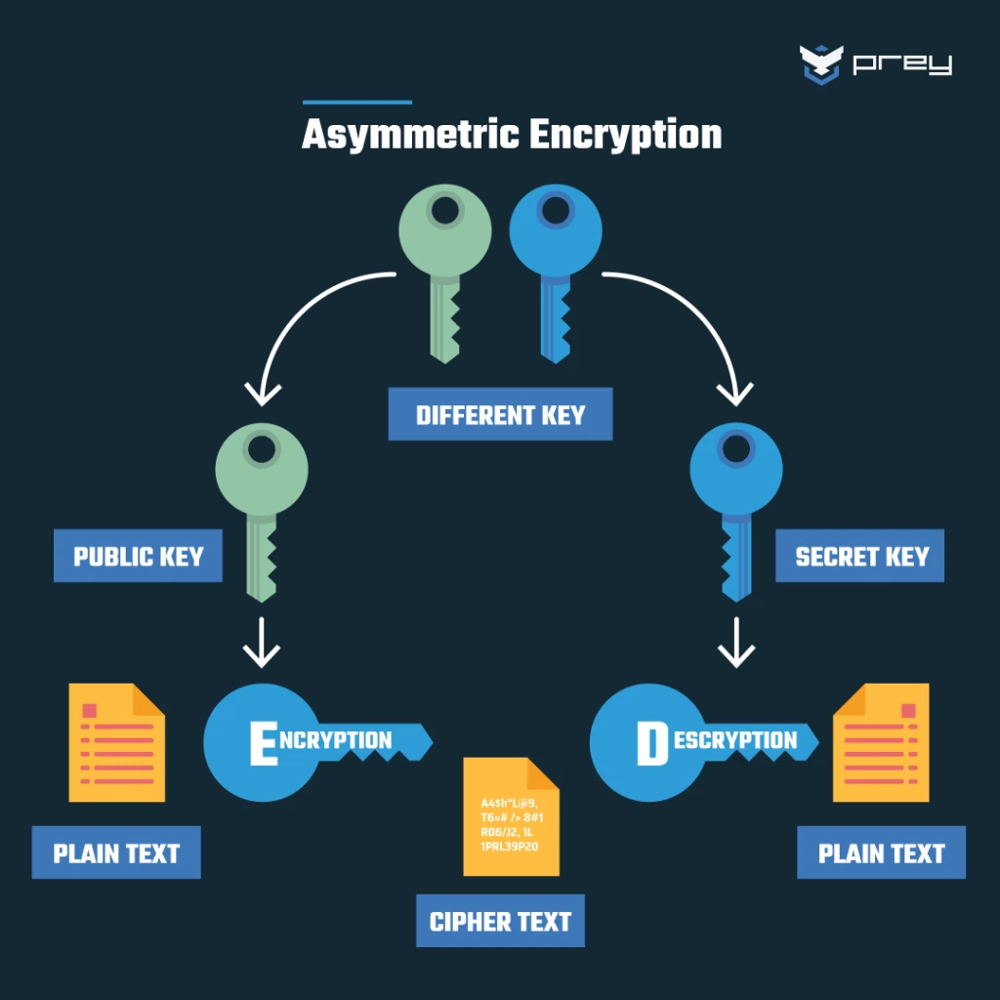

SQL Injection Demonstration
Un entorno seguro que muestra cómo funcionan los ataques de inyección SQL y cómo prevenirlos mediante prácticas de codificación seguras.
Ver más detalles

IoT Device Security Scanner
Un programa que revisa dispositivos IoT en red para verificar configuraciones de seguridad, como contraseñas predeterminadas.
Ver más detalles

Virtual CTF (Capture the Flag)
Un entorno en línea donde los usuarios pueden participar en desafíos de hacking ético para capturar banderas digitales ocultas.
Ver más detallesEmail Spoofing Demo
Un laboratorio donde se muestra cómo funciona la suplantación de identidad por correo electrónico y cómo los encabezados SPF/DKIM pueden proteger contra ella.
Ver más detalles

Encryption/Decryption App
Una aplicación que permite a los usuarios cifrar y descifrar mensajes utilizando algoritmos como AES o RSA.
Ver más detalles